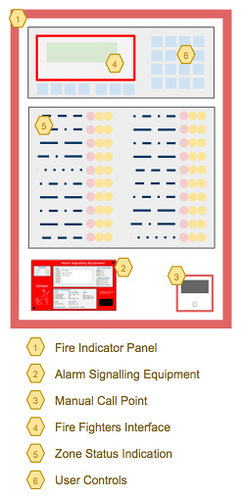
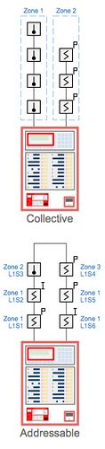

Fire Alarm Systems - Principle of Operation

Rarely in the movies do you ever see a Fire Indicator Panel (FIP), more often than not you will see an American style 'pull station' - the equivalent of a Manual Call Point or Break Glass Alarm found in Australia.
A Fire Indicator Panel (FIP) is probably best described as the 'brains' of a fire detection and alarm system. A fire indicator panel comprises control and indicating equipment (c.i.e) that combined together form an integrated system. These core components comprise;
- Cabinet
- Primary Power Supply Unit & Battery Charger
- Secondary Power (Batteries)
- Control Electronics
- Visual Interface
- Input Interface & Control
- Input Termination & Monitoring
- Output Termination & Monitoring
The first electric fire alarm and detection system was patented in 1890 by Francis Robbins Upton (U.S. Patent no. 436,961 1) although the significant advances were not available until the mid to late 1960?s. Today there are essentially two types of fire indicator panel; Collective (commonly known as conventional) and Addressable (sometimes known as Analogue Addressable or Intelligent).
Principle of Operation
The primary purpose of a fire indicator panel is to monitor each circuit, zone or point for any condition (alarm signal or other abnormal condition); display the status of that condition and to operate any required output or outputs according to the approved design of the system. These outputs are typically for the purpose of warning occupants on a fire alarm signal, notify the fire brigade, control the spread of heat, smoke or fire; or used for a wide variety of other purposes.
Before I go any further its important to define a couple of terms used in this article, to provide both context and and explanation of their meaning;
Circuit
A circuit comprises an unbroken path (usually a pair of wires) along which an electric current exists or is intended or able to flow. In fire alarm terms this generally means the wiring connecting one or more detectors to the fire panel.
ZoneA zone is a group of one or more detectors, grouped by their common location or in the case of a collective circuit all of the detectors on that circuit. Another way to describe a zone is one of the following;
- one or more detectors on an single collective circuit or;
- one or more detectors, in a common location, defined in software on an addressable circuit.
Standards also limit the number of detectors a zone may comprise.
Types of systems
As previously discussed, there are generally two types of fire alarm systems, Collective and Addressable;

Collective
On very simple terms, a collective fire alarm system is one that comprises one or more circuits, with detectors connected in parallel. An alarm signal is received at the fire panel when the current on a circuit increases due to the alarm operation of one of the detectors on that circuit. In modern detectors there is may also be fitted an alarm status indication, often a light emitting diode or LED.
One of the limitations of a collective systems is that the control panel is unable to identify the status of each detector of the circuit. Another way to describe this is that the control panel is only able to display the alarm or fault status of a circuit, not each detector on the circuit.
Addressable
The alternative is an addressable fire alarm system that comprises one or more circuits with detectors connected in parallel, andeach detector has a unique identification (address) on the circuit. When the conditions for an alarm signal are satisfied at the detector, an alarm signal is transmitted via the circuit to the fire indicator panel.
In an addressable system, each detector has the ability to identify itself and its current status. Over the years, the level of sophistication of detectors and systems has greatly increased. This includes collecting more information about the conditions surrounding each detector including the many bi-products of combustion and other environmental factors.
There are many advantages of addressable systems including the ability to more effectively handle contamination over time that leads to nuisance (false) alarms, improved detection of fires and the ability to identify the precise location of a detector and its current condition or state.
While we have described the two types of systems there exists variations to these basic types including fire panels that include both collective and addressable features. Generally these systems are addressable systems with additional c.i.e to provide collective functionality.
Standards for design
In Australia there are principally three standards that have been developed over the years that define the integrity, operation, engineering design and construction methods for fire alarm systems. These Australian Standards are;
- AS1603.4 - Automatic fire detection and alarm systems - Control and indicating equipment
- AS4428.1 - Fire detection, warning, control and intercom systems - Control and indicating equipment
- AS7240 - Fire Detection and Alarm Systems
As Australia moves toward the global economy we are more likely to adopt (in principal) international (ISO) standards. AS7240 is an example of this adoption which is leading to visually different fire panels than those we have traditionally seen in use in Australia.
In the next part of this series we will be focusing on the different types of detectors that are connected to fire panels, including manual call points, heat detectors, smoke detectors and flame detectors. We will also discuss the principal of operation of the different types within each of these categories.